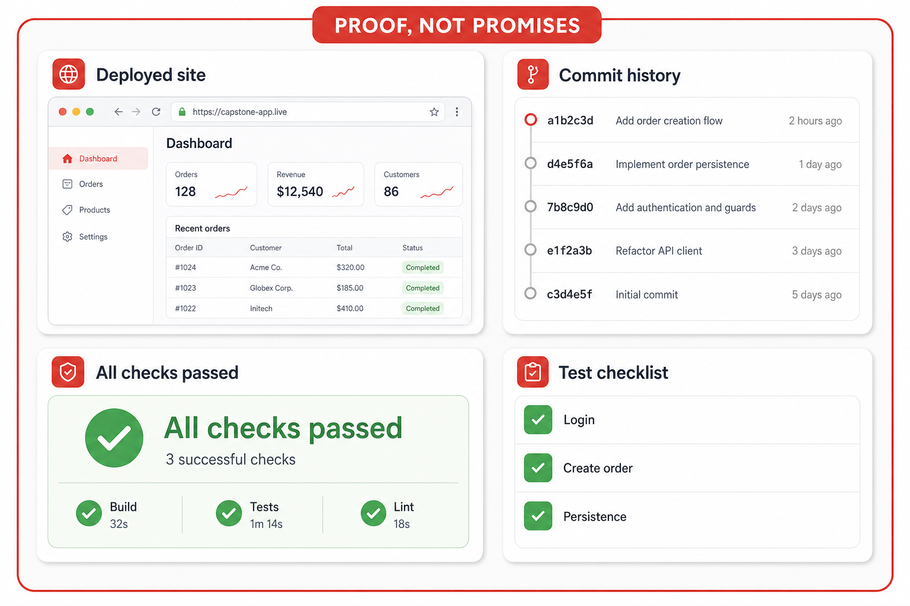
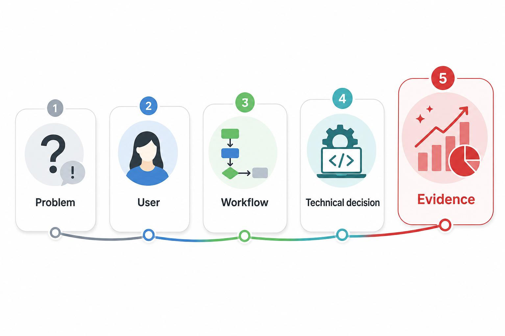

The final demo should tell a product story: user problem, solution, build choices, proof, and what you learned.
Demos walk through every page instead of one meaningful workflow.
Technical choices are listed without explaining why.
Students show features but not proof they work.
A strong demo has a beginning, middle, and proof — and connects tech to product decisions.
What real issue it addresses.
Who experiences it.
What the app helps them do.
What you chose, and why.
Deployed URL, tests, history.
A good demo says: here is the problem, here is the action, here is the result.

A purchase journey end to end.
Request → confirmation → reminder.
Post → reply → notification.
Present from the deployed site — localhost is a fallback, not the plan.
The presentation must match the real app. Practice the hard questions.

Problem · User · Workflow · Technical decision · Evidence.